A penalty has already appeared on Day 5: the Akaike information criterion, \(\text{AIC} = -2\log L + 2k\), adds a cost of 2 for every parameter the model estimates. The cost term of the SVM on Day 8 was a second example. The trees and boosting of Day 10 will bring two more.
Ridge and lasso regression charge the model not for the number of its coefficients but for their size:
KEY — Every penalised criterion in this course has the form fit + λ × complexity. AIC, cost-complexity pruning and the lasso differ only in how complexity is measured, and in whether \(\lambda\) is fixed in advance or chosen by cross-validation.
Two consequences follow, and they form the main content of the chapter. First, shrinking coefficients towards zero introduces bias on purpose, in exchange for a reduction in variance. A biased estimator can therefore have a lower prediction error than an unbiased one; this is the bias–variance trade-off, now used deliberately as a method. Second, the way in which the size of \(\beta\) is measured decides whether coefficients only shrink or are set exactly to zero. In the second case the shrinkage method is also a method for selecting variables.
↪ ISLR Chapter 6. The end of this chapter gives a reading guide with direct links: <U+00A7>6.2 Shrinkage Methods is the core.
When least squares is not enough
Many predictors, similar predictors
Ordinary least squares (OLS) gives unbiased estimates with the smallest variance among all linear unbiased estimators. That guarantee is narrower than it sounds. It does not say that the variance is small, only that no other unbiased estimator does better. Here, variance means sampling variance: how much the estimate of a coefficient would change if the study were repeated with new data from the same population. Its square root is the standard error of the coefficient, the number that summary() reports next to each estimate. A large sampling variance therefore shows up as a large standard error, and hence as a wide confidence interval.
Two situations, both common in biological data, make this variance large.
Many predictors relative to the number of observations. Every coefficient uses up a degree of freedom. When the number of predictors \(p\) is not much smaller than the number of observations \(n\), little information is left per coefficient, and the estimates vary strongly from one sample to the next. When \(p > n\), least squares has no unique solution at all.
Correlated predictors. When two predictors tend to rise and fall together, the data contain much information about their combined effect but little about how that effect should be divided between them. This is called collinearity.
DEF — Collinearity: two or more predictors are strongly correlated, so that one of them can be predicted well from the others. It inflates the standard errors of the coefficients involved, but does not bias them.
In both situations the estimates remain correct on average, but the estimate from a single study can lie far from the true value. Regularisation accepts a small, deliberate error in exchange for estimates that vary much less.
Example: biofilm formation by Pseudomonas aeruginosa
We use one simulated data set throughout this chapter. The simulation code is not shown, because only its structure matters.
Pseudomonas aeruginosa forms biofilms in the lungs of patients with cystic fibrosis, and clinical isolates differ strongly in how well they do so. Forty clinical isolates were grown in flow cells for 48 hours, and for each isolate the response is the mean biofilm thickness (µm), measured by confocal microscopy. Using the mean over replicate images avoids pseudoreplication: images from the same flow cell are not independent. For each isolate, twelve possible predictors were recorded:
Variable
Meaning
Group
lasR
expression of the quorum-sensing regulator lasR (log2 CPM)
quorum sensing
las_onset
time until the las quorum-sensing reporter switches on (h)
quorum sensing
rhl_onset
time until the rhl quorum-sensing reporter switches on (h)
quorum sensing
pel
expression of the pel matrix operon (log2 fold change)
quorum sensing + c-di-GMP
psl
expression of the psl matrix operon (log2 fold change)
expression of the type IV pilin gene pilA (log2 CPM)
motility
swarm
swarming motility zone (mm)
motility
passages
number of laboratory subcultures since isolation
(weakly) motility
flow
medium flow rate in the flow cell (µL/min)
independent
inoculum
inoculum density (107 CFU/mL)
independent
The twelve predictors are not independent of each other. They fall into three groups, each driven by an underlying cause that was not measured itself. Isolates with strong quorum sensing have high lasR expression, switch on their quorum-sensing reporters early, and express the pel operon more strongly. Isolates with high c-di-GMP signalling have more c-di-GMP and express psl and pel more strongly. Isolates with strong type IV pili activity have high pilA expression and large twitching and swarming zones. Such unmeasured causes are called latent variables.
DEF — A latent variable is a variable that is not measured directly but influences several of the variables that are measured. Because these measured variables share the same cause, they are correlated with each other. “Quorum-sensing activity” is latent here: it is not a column of the data, yet it drives lasR expression, both reporter onset times and pel expression.
In the simulation, only four predictors truly affect biofilm thickness: higher pel expression (+0.9 µm per log2 unit, more matrix), larger twitching zones (+0.16 µm per mm, because type IV pili help cells to form microcolonies), more laboratory passages (−0.25 µm per passage, because isolates lose biofilm traits when kept in the laboratory) and a higher flow rate (−0.015 µm per µL/min, because shear detaches cells). The other eight predictors have no effect at all; they are only correlated with the four that do. The noise standard deviation is 0.8 µm.
DEF — A model is sparse when most of its coefficients are exactly zero, so that only a few predictors have any effect. The opposite is a dense model, in which every predictor has some (often small) effect. The true model here is sparse: 4 of 12 coefficients are non-zero.
⚠ The data and effects are simulated for teaching. They are chosen to be biologically plausible, but they are not results about real isolates.
A first look at the data
The data are stored in a data frame isolates, with one row per isolate: the twelve predictors in their original units, and the response thickness in the last column. The first six isolates:
#> pel twitch passages flow
#> Min. :1.780 Min. :11.42 Min. : 6.000 Min. : 13.79
#> 1st Qu.:2.524 1st Qu.:15.38 1st Qu.: 8.000 1st Qu.: 41.99
#> Median :3.125 Median :17.18 Median : 8.500 Median : 51.70
#> Mean :3.086 Mean :17.89 Mean : 8.775 Mean : 54.72
#> 3rd Qu.:3.456 3rd Qu.:20.38 3rd Qu.:10.000 3rd Qu.: 66.83
#> Max. :4.746 Max. :25.47 Max. :12.000 Max. :112.82
#> thickness
#> Min. :15.79
#> 1st Qu.:17.62
#> Median :18.82
#> Mean :18.60
#> 3rd Qu.:19.39
#> Max. :21.00
The predictors have very different ranges: flow varies over tens of µL/min, pel over a few log2 units, and passages takes whole numbers between 6 and 12. Biofilm thickness varies between 15.8 and 21 µm.
Standardising the predictors
The predictors are measured in very different units (hours, mm, µL/min, expression levels), so their coefficients cannot be compared directly. We therefore standardise every predictor to mean 0 and standard deviation 1. A coefficient then means: the change in biofilm thickness (µm) when that predictor increases by one standard deviation. This is also what ridge and lasso require, as explained in Standardisation is not optional.
predictors <-setdiff(names(isolates), "thickness")X <-scale(as.matrix(isolates[, predictors])) # standardised predictorsy <- isolates$thicknessn <-nrow(X); p <-ncol(X)c(n = n, p = p)
#> n p
#> 40 12
X is a numeric matrix with one row per isolate and one column per predictor, and y is a vector with the 40 thicknesses. This is the form in which glmnet needs the data. After standardising, every column of X has mean 0 and standard deviation 1, so a value of 1.5 means “1.5 standard deviations above the average isolate”:
R <-cor(X)op <-par(mar =c(6, 6, 1, 1))image(1:p, 1:p, R[, p:1], zlim =c(-1, 1), axes =FALSE, xlab ="", ylab ="",col =hcl.colors(21, "Blue-Red 3"))axis(1, 1:p, predictors, las =2); axis(2, 1:p, rev(predictors), las =1)text(rep(1:p, p), rep(p:1, each = p), sprintf("%.1f", R), cex =0.6)par(op)
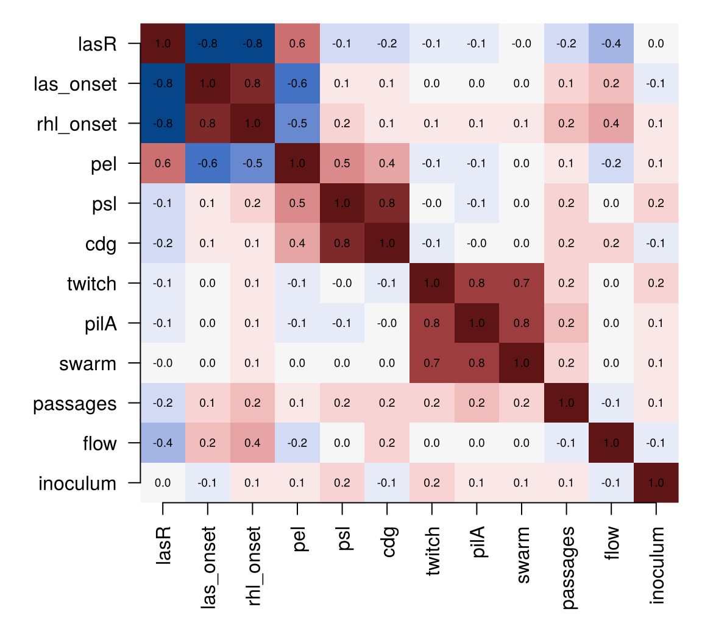
Figure 11.1: Correlations between the twelve predictors. The three blocks correspond to the three latent variables (quorum sensing, c-di-GMP, motility).
Within each block, correlations are high (up to 0.84); between blocks they are low. The variance inflation factor (VIF) measures how much this matters for each coefficient.
DEF — The variance inflation factor of predictor \(j\) is \(\text{VIF}_j = 1/(1 - R_j^2)\), where \(R_j^2\) is the \(R^2\) from regressing \(x_j\) on all other predictors. It is the factor by which the sampling variance of \(\hat\beta_j\) is larger than it would be with uncorrelated predictors. A VIF of 9 triples the standard error (\(\sqrt 9 = 3\)).
round(car::vif(lm(y ~ ., data =data.frame(X))), 1)
The VIFs lie between about 1.5 (flow rate and inoculum, which are independent of the rest) and 7.6. The collinearity is moderate, not extreme — typical of experimental data in which several measurements reflect the same regulatory system.
The table compares the true coefficient with the OLS estimate and its standard error. Three things stand out.
The standard errors are large compared with the effects: between about 0.2 and 0.4 µm per standard deviation, while the true effects are between 0.3 and 0.7 µm. They are largest for the predictors in the correlated blocks, as the VIFs predicted.
Some estimates are far from the truth. The effects of passages and flow are estimated at almost twice their true size, and psl, which has no effect, receives an estimate (−0.40) as large as the true effects.
Within a correlated block, errors compensate each other: psl is estimated negative and its block partner cdg positive, although both have no effect. Their sum is close to zero, which is what the data can determine.
None of this means that OLS is wrong. The estimates are unbiased; the problem is that a single data set of 40 isolates does not pin them down.
How much would the estimates change in a new study?
Because the data are simulated, we can repeat the study: keep the same 40 isolates and their predictor values, draw new biofilm thicknesses 500 times, and refit OLS each time. The spread of the estimates is the sampling variance that the standard errors describe.
Code
set.seed(3)b_rep <-t(replicate(500, coef(lm(f_true +rnorm(n, 0, 0.8) ~ X))[-1]))colnames(b_rep) <- predictorsop <-par(mar =c(6, 4, 1, 1))boxplot(b_rep, las =2, col ="grey90", border ="grey40", outline =FALSE,ylab ="estimate (µm per SD)")abline(h =0, col ="grey70")points(1:p, beta_true, pch =4, col ="firebrick", lwd =2, cex =1.3)par(op)
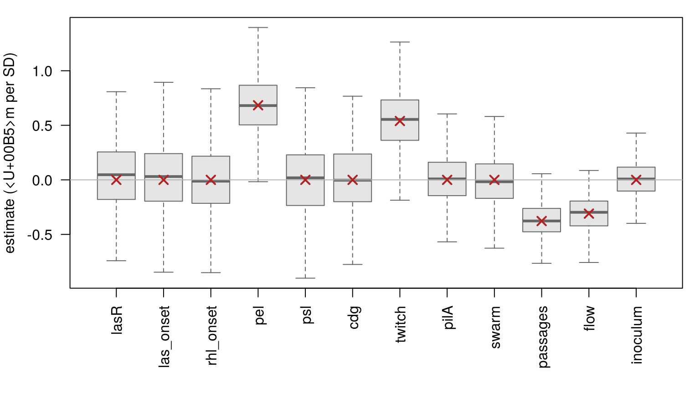
Figure 11.2: OLS estimates of the twelve coefficients in 500 repeated studies with the same isolates. Red crosses mark the true values. The estimates are centred on the truth (unbiased), but individual studies can be far off.
The boxes are centred on the true values, so OLS is unbiased. But they are wide, and widest for the predictors in the correlated blocks. In a single study, the estimate for pel or twitch can easily be only half or one and a half times its true value, and predictors without any effect can easily receive an estimate as large as a real effect.
The idea of regularisation
The error of an estimate has two parts: its bias (how far it is off on average) and its variance (how much it varies between studies). The error of a prediction has a third part, the noise in the new observation itself, which no model can remove (Why shrinkage helps: bias against variance gives the formula). OLS has zero bias but a large variance. Regularisation pulls all coefficients towards zero. This introduces a small bias, because true effects are pulled down too, but it reduces the variance much more, because the estimates can no longer swing widely from study to study. The rest of the chapter shows how this works for ridge regression, the lasso and the elastic net, and how the amount of pulling is chosen.
KEY — Regularisation trades a little bias for a large reduction in variance. When predictors are many or correlated, this gives estimates and predictions that are, on average, closer to the truth than those of least squares.
Ridge regression
The penalised criterion
Least squares chooses the coefficients that minimise the residual sum of squares,
Ridge regression adds a penalty on the size of the coefficients and chooses the coefficients that minimise
\[
\underbrace{\sum_{i=1}^{n}\Big(y_i - \beta_0 - \sum_{j=1}^{p}\beta_j x_{ij}\Big)^2}_{\text{RSS: fit to the data}}
\;+\; \underbrace{\lambda \sum_{j=1}^{p} \beta_j^2}_{\text{penalty}} ,
\]
where \(\lambda \ge 0\) is the tuning parameter that sets how strongly large coefficients are punished. A coefficient can only become large if it reduces the RSS by more than it costs in penalty.
DEF — Ridge regression minimises the residual sum of squares plus \(\lambda\) times the sum of the squared coefficients (an \(\ell_2\) penalty).
Four properties follow directly from the criterion.
If \(\lambda = 0\) the penalty disappears and the ridge estimate equals the least squares estimate.
As \(\lambda \to \infty\) every coefficient is driven towards zero, and the fitted model approaches the model with only an intercept.
For values in between there is a whole path of solutions, one for each value of \(\lambda\).
The intercept \(\beta_0\) is not penalised. Penalising it would make the fit depend on where the response happens to be centred, which is not a modelling choice anyone intends.
KEY — Ridge shrinks every coefficient but sets none of them exactly to zero. All \(p\) predictors remain in the model at every \(\lambda\), so ridge regression is a shrinkage method and not a selection method.
Standardisation is not optional
The penalty \(\sum \beta_j^2\) adds together coefficients that are measured in different units. A predictor recorded in millimetres has a coefficient a thousand times smaller than the same predictor recorded in metres, and is therefore penalised a million times less. In least squares a change of units only rescales the coefficient and leaves the fitted values unchanged; in ridge and lasso it changes the fit.
The remedy is to standardise every predictor to a standard deviation of 1 before penalising. glmnet does this internally by default (standardize = TRUE) and reports the coefficients back on the original scale. In this chapter we have already standardised X ourselves, so the coefficients are in µm per standard deviation of each predictor and can be compared directly.
library(glmnet)grid <-10^seq(1, -3, length.out =100) # decreasing, as glmnet expectsridge_fit <-glmnet(X, y, alpha =0, family ="gaussian",lambda = grid, standardize =TRUE)
The lambda argument is the grid: the list of penalty values for which the model is fitted, here 100 values from 10 down to 0.001 on a log scale. Each value gives one set of coefficients, and together they form the coefficient paths shown below. In cv.glmnet the same kind of grid is the set of \(\lambda\) values whose cross-validated error is compared. Supplying a grid is not required, because glmnet constructs a sensible one itself, but it makes the range explicit and lets us use the same grid for ridge, lasso and elastic net.
⚠glmnet minimises \(\frac{1}{2n}\text{RSS} + \lambda\left[\frac{1-\alpha}{2}\|\beta\|_2^2 + \alpha\|\beta\|_1\right]\), not the textbook criterion. For the lasso a textbook \(\lambda\) equals \(2n\) times the glmnet\(\lambda\); for ridge the conversion also involves the standard deviation of \(y\). Numerical values of \(\lambda\) can therefore not be compared between glmnet and ISLR. Only the shape of the results can.
The closed-form solution
Ridge regression is one of the few penalised methods with a formula. In matrix form, with centred response and standardised predictors, the criterion is
Compare this with the least-squares formula of Appendix B: the only change is the term \(\lambda\mathbf{I}\) added to \(\mathbf{X}^\top\mathbf{X}\). That small change has two consequences.
The solution always exists. The eigenvalues of \(\mathbf{X}^\top\mathbf{X}\) are \(d_j^2 \ge 0\), so those of \(\mathbf{X}^\top\mathbf{X} + \lambda\mathbf{I}\) are \(d_j^2 + \lambda > 0\). The matrix is invertible even when \(p > n\) or when predictors are perfectly collinear, the two cases in which least squares fails.
It is stable. Least squares divides by the eigenvalues \(d_j^2\), and a tiny eigenvalue, the signature of collinearity, blows the estimate up. Ridge divides by \(d_j^2 + \lambda\) instead, which is never smaller than \(\lambda\).
KEY — Ridge regression adds a “ridge” of size \(\lambda\) to the diagonal of \(\mathbf{X}^\top\mathbf{X}\). This is where the method gets its name.
The formula can be checked against glmnet, provided the two definitions of \(\lambda\) are matched. glmnet standardises with the divisor \(n\) instead of \(n - 1\), divides the residual sum of squares by \(2n\), and rescales the response internally; a glmnet value \(\lambda_g\) then corresponds to \(\lambda = n\lambda_g/s_y\) in the formula above, with \(s_y\) the standard deviation of the response.
plot(ridge_fit, xvar ="lambda", lwd =1.5, label =TRUE)abline(h =0, col ="grey60")
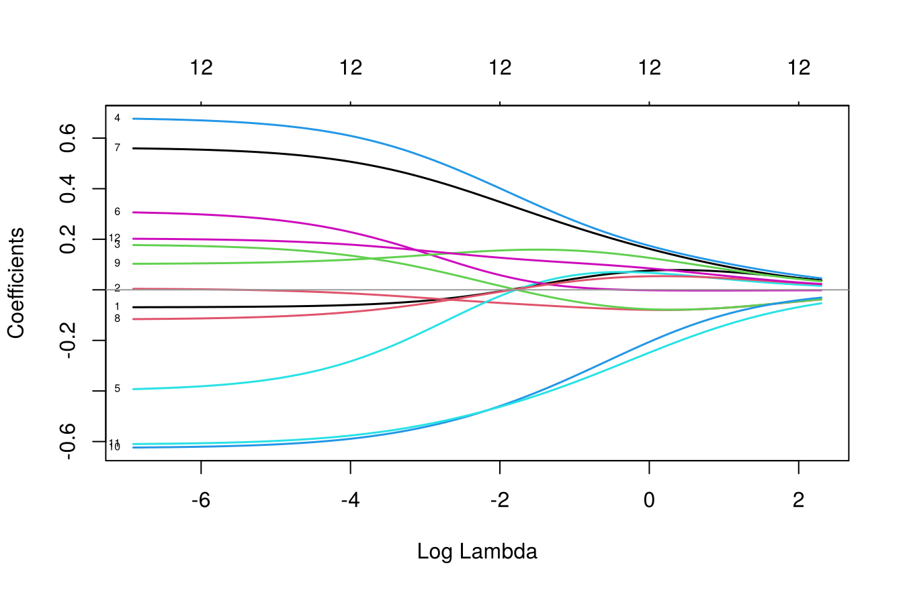
Figure 11.3: Ridge coefficient paths. Each line is one of the twelve coefficients as the penalty increases from left to right; the numbers on the right are the column numbers of X. All twelve approach zero together and none reaches it.
Reading the plot from right to left shows the fitting process in reverse. At the far right the penalty dominates and every coefficient is essentially zero. Moving left, the penalty becomes weaker and the coefficients grow and separate. At the far left the estimates approach the unstable least squares values seen above.
The number along the top axis is the number of non-zero coefficients, which for ridge is 12 everywhere. The labels are column numbers: colnames(X) gives the matching predictor names. The equivalent figure in ISLR, for the Credit data, is Figure 6.4.
Why shrinkage helps: bias against variance
Suppose we use a fitted model to predict the thickness \(y_0\) of a new biofilm grown from an isolate with predictor values \(x_0\). The true mean thickness for that isolate is \(f(x_0)\), and the observed value is \(y_0 = f(x_0) + \varepsilon\), where the noise \(\varepsilon\) has mean 0 and variance \(\sigma^2\). The prediction \(\hat f(x_0)\) depends on the data set that happened to be used for fitting, so it differs between studies. Averaged over many possible studies, the expected squared prediction error splits into three parts:
Squared bias: how far the average prediction over many studies lies from the true mean. It is zero for least squares when the model contains the true predictors, and grows as the penalty pulls the coefficients towards zero.
Variance: how much the prediction changes from one study to the next. It is large for least squares with many or correlated predictors, and shrinks as the penalty grows.
Irreducible error: the noise in the new observation itself, here \(\sigma^2 = 0.8^2 = 0.64\). No model can remove it, because it is not predictable from \(x_0\).
KEY — Total MSE = bias² + variance + irreducible error. Regularisation cannot touch the last term; it trades the first two against each other.
Ridge estimates are biased, and the bias is not an accident but the price that is paid on purpose. Because the data are simulated, we can measure this trade directly. As in Figure 11.2, we repeat the study 200 times with the same 40 isolates (the same X), draw new biofilm thicknesses each time, and decompose the prediction error at each value of \(\lambda\).
Code
R_rep <-200lam <-10^seq(0.5, -3, length.out =40)preds <-array(NA_real_, dim =c(R_rep, n, length(lam)))for (r inseq_len(R_rep)) { y_r <- f_true +rnorm(n, 0, 0.8) fit_r <-glmnet(X, y_r, alpha =0, lambda = lam, standardize =TRUE) preds[r, , ] <-predict(fit_r, newx = X)}mean_pred <-apply(preds, c(2, 3), mean) # average prediction per isolate and lambdavar_pred <-apply(preds, c(2, 3), var) # spread of predictions around that averagebias2 <-colMeans((mean_pred - f_true)^2)vari <-colMeans(var_pred)
Only the response is redrawn in each replicate, so the variation across replicates is pure sampling variation. The code computes the three terms of the decomposition directly, for each \(\lambda\) and averaged over the 40 isolates: bias2 is the squared distance between the average prediction and the true mean f_true, vari is the variance of the predictions across the 200 studies, and the irreducible error is the known \(\sigma^2 = 0.64\). The total MSE in the figure is their sum.
Code
plot(log(lam), bias2 + vari +0.8^2, type ="l", lwd =2, col ="firebrick",ylim =c(0, max(bias2 + vari +0.8^2)),xlab =expression(log(lambda)), ylab ="prediction error")lines(log(lam), bias2, lwd =2, col ="grey25")lines(log(lam), vari, lwd =2, col ="steelblue")abline(h =0.8^2, lty =3)i_best <-which.min(bias2 + vari)abline(v =log(lam)[i_best], lty =2, col ="firebrick")legend("left", bty ="n", lwd =2, col =c("grey25", "steelblue", "firebrick"),legend =c("squared bias", "variance", "total MSE"))
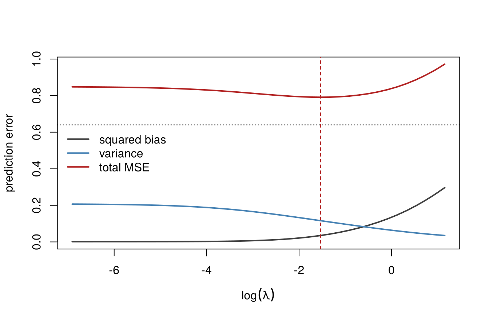
Figure 11.4: Squared bias, variance and total mean squared prediction error for ridge regression as the penalty grows. The minimum of the total lies at a strictly positive penalty: some bias is worth accepting.
The two components move in opposite directions. The variance falls as the penalty grows, because a strongly penalised estimator hardly responds to the data. The squared bias rises, because the coefficients are pulled further and further from the truth. Their sum is U-shaped, and its minimum lies at a strictly positive \(\lambda\): the best predictor here is not the unbiased one. The dotted line is the irreducible error \(\sigma^2 = 0.64\), below which no method can go. ISLR shows the same decomposition in Figure 6.5.
KEY — Unbiasedness is worth having only when the variance is under control. When \(p\) is large relative to \(n\), or predictors are collinear, accepting a little bias in exchange for a large reduction in variance gives better predictions.
Effective degrees of freedom
The degrees-of-freedom question of Day 1 has an exact answer for ridge regression. The cloud of observations in the space of the standardised predictors can be described by \(p\) independent directions, each with its own amount of spread; these are the principal components of Day 3. Write \(d_j^2\) for the spread along direction \(j\) (strictly, \(d_j^2/(n-1)\) is the variance along that direction; the \(d_j\) are called the singular values of the design matrix). Ridge regression shrinks the fit along direction \(j\) by the factor \(d_j^2/(d_j^2 + \lambda)\), where \(\lambda\) is the textbook penalty. Directions with much spread are hardly shrunk; directions with little spread — the combinations of correlated predictors that the data hardly contain — are shrunk strongly. Adding up these factors gives the effective degrees of freedom,
which equals \(p\) at \(\lambda = 0\) and falls smoothly to 0 as \(\lambda\) grows. Each term lies between 0 and 1: it is 1 for a direction in the data that is left unpenalised and 0 for a direction that is shrunk away completely.
sd_n <-function(v) sqrt(mean((v -mean(v))^2)) # glmnet standardises with 1/nXs <-scale(X, scale =apply(X, 2, sd_n))d <-svd(Xs)$d## convert the glmnet lambda to the textbook lambda (ridge, gaussian)lam_text <- n * lam /sd_n(y)dfr <-sapply(lam_text, function(l) sum(d^2/ (d^2+ l)))plot(log(lam), dfr, type ="l", lwd =2, ylim =c(0, p),xlab =expression(log(lambda)~"(glmnet scale)"),ylab ="effective degrees of freedom")abline(h = p, lty =3); abline(v =log(lam)[i_best], lty =2, col ="firebrick")round(dfr[i_best], 1)
#> [1] 8.1
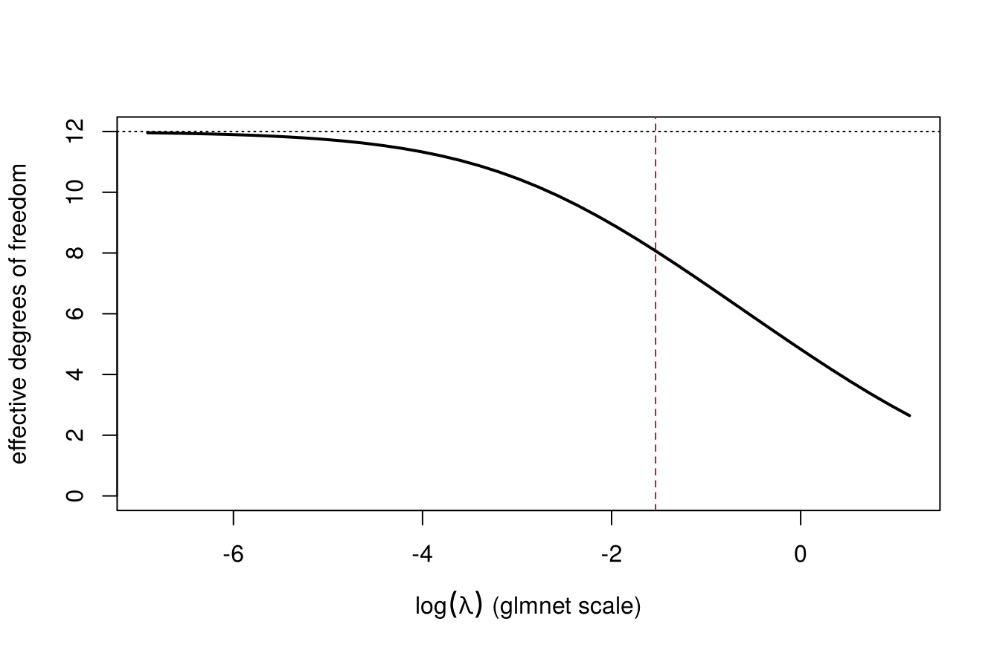
Figure 11.5: Effective degrees of freedom of the ridge fit as a function of the penalty. The number of coefficients is constant at 12; the effective number is not. The dashed line marks the penalty with the lowest true prediction error in Figure 11.4.
At the penalty with the lowest prediction error the model uses about 8.1 effective degrees of freedom, fewer than its twelve coefficients. This is the precise sense in which counting parameters fails as a measure of flexibility, and the reason why AIC cannot be applied to a ridge fit by counting coefficients: the right number is not an integer, and it depends on \(\lambda\).
↪ The same objection returns for trees on Day 10. There the effective number of parameters could not be computed at all; here it can, and its non-integer value makes the objection concrete.
The lasso
Replacing the squared penalty by an absolute one
The lasso uses the same residual sum of squares but a different penalty: the sum of the absolute values of the coefficients. It chooses the coefficients that minimise
\[
\underbrace{\sum_{i=1}^{n}\Big(y_i - \beta_0 - \sum_{j=1}^{p}\beta_j x_{ij}\Big)^2}_{\text{RSS: fit to the data}}
\;+\; \underbrace{\lambda \sum_{j=1}^{p} |\beta_j|}_{\text{penalty}} .
\]
DEF — The lasso (least absolute shrinkage and selection operator) minimises the residual sum of squares plus \(\lambda\) times the sum of the absolute coefficients (an \(\ell_1\) penalty).
The change from \(\beta_j^2\) to \(|\beta_j|\) looks small but is not. Every property listed for ridge carries over — \(\lambda = 0\) gives least squares, \(\lambda \to \infty\) gives the intercept-only model, the intercept is not penalised — with one addition that changes the character of the method. The lasso sets coefficients exactly to zero, already at finite values of \(\lambda\). It therefore performs variable selection and shrinkage in a single step, and produces a sparse model that can be written down.
lasso_fit <-glmnet(X, y, alpha =1, family ="gaussian",lambda = grid, standardize =TRUE)plot(lasso_fit, xvar ="lambda", lwd =1.5, label =TRUE)abline(h =0, col ="grey60")
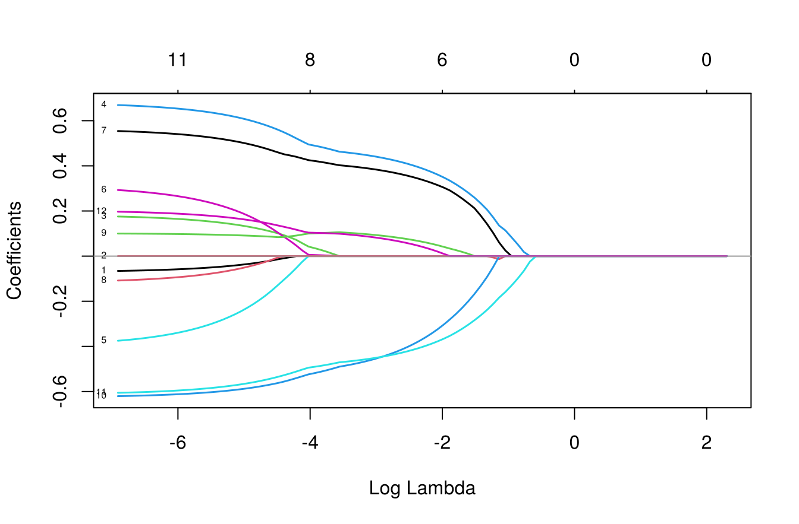
Figure 11.6: Lasso coefficient paths. Coefficients reach exactly zero and stay there; the number along the top axis is the number of predictors still in the model.
Compared with Figure 11.3 the difference is immediate. Paths reach zero and usually remain there, and the number along the top axis falls as the penalty grows. The lasso moves from a model with all predictors to a model with none, without any search over subsets of predictors. The models along the path are not always nested: with correlated predictors one predictor can leave the model while a correlated partner enters in its place. ISLR’s version is Figure 6.6.
Why the absolute value produces zeros
The explanation is geometric, and it is worth working through because it also explains what the lasso does badly. Both criteria can be written as constrained problems: minimise the residual sum of squares subject to \(\sum_j \beta_j^2 \le s\) for ridge, or \(\sum_j |\beta_j| \le s\) for the lasso. A small budget \(s\) corresponds to a large \(\lambda\).
Code
ell <-function(centre, A, level, m =300) { e <-eigen(A) th <-seq(0, 2* pi, length.out = m) r <-rbind(cos(th) /sqrt(e$values[1]),sin(th) /sqrt(e$values[2])) *sqrt(level) pts <- e$vectors %*% rcbind(centre[1] + pts[1, ], centre[2] + pts[2, ])}A <-matrix(c(1, 0.65, 0.65, 1), 2, 2) # correlated predictorsb0 <-c(2.4, 1.0) # least squares estimaterss <-function(b) drop(t(b - b0) %*% A %*% (b - b0)) # RSS up to a constant## points on the boundary of the constraint regionboundary <-function(kind, s, m =20000) {if (kind =="ridge") { th <-seq(0, 2* pi, length.out = m)cbind(s *cos(th), s *sin(th)) } else { t <-seq(0, 1, length.out = m)rbind(cbind(s * (1- t), s * t), cbind(-s * t, s * (1- t)),cbind(-s * (1- t), -s * t), cbind(s * t, -s * (1- t))) }}op <-par(mfrow =c(1, 2), mar =c(4, 4, 2.2, 1))for (kind inc("lasso", "ridge")) {plot(NA, xlim =c(-0.6, 3.2), ylim =c(-0.6, 2.4), asp =1,xlab =expression(beta[1]), ylab =expression(beta[2]),main = kind)abline(h =0, v =0, col ="grey70") s <-if (kind =="lasso") 1.35else1.25 B <-boundary(kind, s)polygon(B[, 1], B[, 2], col ="#cfe0ea", border ="grey30") hit <- B[which.min(apply(B, 1, rss)), ] # exact constrained solution lev <-as.numeric(t(hit - b0) %*% A %*% (hit - b0))for (f inc(0.35, 0.7, 1)) { e <-ell(b0, A, lev * f)lines(e[, 1], e[, 2], col ="firebrick", lwd =1.4) }points(b0[1], b0[2], pch =16, cex =1.1)text(b0[1], b0[2], expression(hat(beta)^{OLS}), pos =4, cex =0.8)points(hit[1], hit[2], pch =16, col ="firebrick", cex =1.2)}par(op)
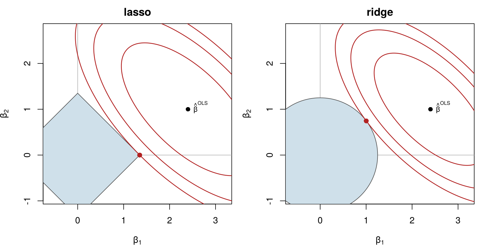
Figure 11.7: The constrained view with two predictors. Ellipses are contours of the residual sum of squares centred on the least squares estimate; the shaded region is the constraint. The lasso solution (left) lies on a corner of the diamond, where one coefficient is exactly zero. The ridge solution (right) touches the circle away from the axes.
The solution is the point where the smallest error contour first touches the constraint region. The diamond has corners on the axes, and a growing ellipse often touches a corner first — so a lasso solution often has one or more coefficients exactly zero. The circle has no corners, so first contact almost never occurs on an axis, and ridge coefficients are almost never exactly zero. ISLR draws the same picture in Figure 6.7.
With more than two predictors the diamond becomes a shape with corners, edges and faces in many dimensions, and the argument is unchanged: contact with a corner or edge means that several coefficients are zero at the same time.
⚠ The same geometry explains a real weakness. When two predictors are nearly identical, the lasso keeps one of them more or less arbitrarily and drops the other. Refit on a slightly different sample and the choice may reverse. Under collinearity, lasso selection is not a stable statement about which variable matters — which matters here for the predictors within each correlated block.
The algorithm: soft-thresholding and coordinate descent
The lasso has no closed-form solution in general, because \(|\beta|\) has a kink at zero and cannot be differentiated there. With a single predictor, however, the problem can be solved exactly, and the general algorithm is built from that case.
Take one standardised predictor, \(\frac1n\sum_i x_i^2 = 1\), and the criterion in the scaling that glmnet uses,
Let \(z = \frac1n\sum_i x_iy_i\) be the least-squares estimate. For \(\beta > 0\) the derivative is \(-z + \beta + \lambda\), which is zero at \(\beta = z - \lambda\); this is a valid solution only if \(z > \lambda\). For \(\beta < 0\) the same argument gives \(\beta = z + \lambda\), valid only if \(z < -\lambda\). In between, neither side has a stationary point, and the minimum sits at the kink, \(\beta = 0\). The three cases combine into the soft-thresholding operator:
soft <-function(z, g) sign(z) *pmax(abs(z) - g, 0)z <-seq(-3, 3, length.out =300)plot(z, z, type ="l", lty =3, xlab ="least-squares estimate z",ylab ="penalised estimate", asp =1)lines(z, soft(z, 1), lwd =2, col ="firebrick")lines(z, z / (1+1), lwd =2, col ="steelblue")abline(h =0, col ="grey80")legend("topleft", c("least squares", "lasso: S(z, 1)", "ridge: z / (1 + 1)"), bty ="n",lwd =c(1, 2, 2), lty =c(3, 1, 1), col =c("black", "firebrick", "steelblue"))
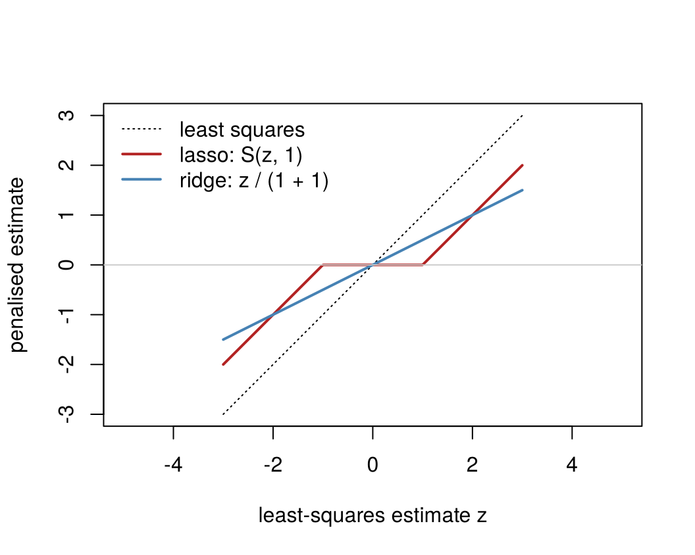
The figure shows the two penalties side by side for \(\lambda = 1\). Ridge scales the estimate by a constant factor, so a non-zero estimate stays non-zero. The lasso shifts it towards zero by \(\lambda\) and sets it to exactly zero when \(|z| \le \lambda\). This is the algebraic counterpart of the corner of the diamond.
KEY — A predictor enters the lasso model only if its association with the response exceeds the threshold \(\lambda\). Below that threshold its coefficient is exactly zero.
With many predictors, the trick is to solve for one coefficient at a time while holding the others fixed. For coefficient \(j\), compute the partial residual, what is left of the response after the other predictors have been accounted for, and apply the one-predictor solution to it:
Cycling through \(j = 1, \dots, p\) until nothing changes is coordinate descent. Because the criterion is convex, the cycle converges to the lasso solution.
lasso_cd <-function(X, y, lambda, sweeps =200) { n <-nrow(X) b <-rep(0, ncol(X)) r <- y -mean(y) # residual; the intercept is the meanfor (s inseq_len(sweeps)) {for (j inseq_len(ncol(X))) { r <- r + X[, j] * b[j] # partial residual: put predictor j back b[j] <-soft(sum(X[, j] * r) / n, lambda) # one-predictor solution r <- r - X[, j] * b[j] # take the updated predictor out again } } b}lambda_l <-0.15b_cd <-lasso_cd(Xn, y, lambda_l)fit_l <-glmnet(Xn, y, alpha =1, lambda = lambda_l, standardize =FALSE, thresh =1e-14)round(cbind(coordinate_descent = b_cd, glmnet =as.vector(coef(fit_l))[-1]), 4)
Fifteen lines reproduce glmnet exactly, because this is the algorithm inside glmnet. Two refinements make the real implementation fast. Along the path it starts each \(\lambda\) from the solution of the previous one (a warm start), and since most coefficients are zero and stay zero, most updates cost almost nothing. For ridge and the elastic net only the update changes: the soft-thresholded value is divided by \(1 + \lambda(1 - \alpha)\).
Which penalty is better?
Neither in general; the answer depends on the truth, not on the method. The lasso assumes that most coefficients are zero. When that is true, it does better than ridge, because it can exploit the sparsity. When instead every predictor contributes a little (a dense truth), the lasso’s zeros are wrong and ridge does better.
To check this, we generate a second response for the same isolates, this time with a small effect for every predictor, and compare the two methods on both responses.
Code
set.seed(21)## dense truth: every predictor contributes a small amountbeta_dense <-rnorm(p, 0, 0.3)f_dense <-16+as.vector(X %*% beta_dense)y_dense <- f_dense +rnorm(n, 0, 0.8)foldid <-sample(rep(1:10, length.out = n)) # one fixed set of foldscv_err <-function(response, alpha) { fit <-cv.glmnet(X, response, alpha = alpha, foldid = foldid)min(fit$cvm)}
The table gives the lowest cross-validated mean squared error for each method. Both methods are evaluated on identical folds — the foldid argument ensures this — so that differences between the columns are not caused by differences in how the folds happened to fall. The table should be read row by row: within a row the comparison is fair, while between rows the responses differ and the numbers are not comparable. With the sparse truth the lasso wins; with the dense truth the order reverses, although here by a small margin that lies within the uncertainty of the cross-validated errors.
KEY — The lasso is not a better method than ridge. It makes a different assumption about the truth, and cross-validation is how we decide which assumption the data support.
ISLR makes the same point with two simulated settings in Figures 6.8 and 6.9.
The elastic net
The elastic net combines the two penalties. It minimises
where the mixing parameter \(\alpha\) lies between 0 and 1: \(\alpha = 0\) gives ridge regression, \(\alpha = 1\) the lasso, and values in between a mixture. This is the criterion that glmnet uses for all three methods, which is why its alpha argument selects the method.
DEF — The elastic net penalises a weighted mixture of the squared and the absolute coefficients; \(\alpha\) sets the mix, \(\lambda\) the overall strength.
The elastic net exists because the weaknesses of the two methods are complementary. Ridge handles correlated predictors well but never selects; the lasso selects but handles correlated predictors badly. Mixing the penalties keeps the zeros of the lasso, while correlated predictors tend to enter or leave the model together and share the coefficient between them, rather than one of them taking all of it. This is called the grouping effect.
enet_fit <-glmnet(X, y, alpha =0.5, lambda = grid, standardize =TRUE)op <-par(mfrow =c(1, 3), mar =c(4.5, 4, 5, 1))plot(ridge_fit, xvar ="lambda", lwd =1.1); title("ridge (alpha = 0)", line =3.2)plot(enet_fit, xvar ="lambda", lwd =1.1); title("elastic net (alpha = 0.5)", line =3.2)plot(lasso_fit, xvar ="lambda", lwd =1.1); title("lasso (alpha = 1)", line =3.2)par(op)
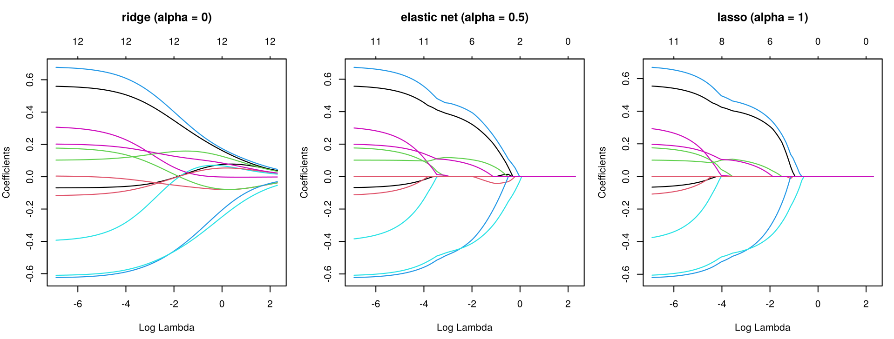
Figure 11.8: Coefficient paths for three penalties on the same data. Ridge (left) keeps every predictor; the lasso (right) removes most of them; the elastic net (centre) lies in between and tends to keep correlated predictors together.
Compare the three panels at the same position on the \(x\)-axis. The number of remaining coefficients falls from left to right, and the elastic net lies between the two extremes: it sets coefficients to zero, but fewer of them, and it spreads a signal over a group of correlated predictors instead of assigning it to a single one.
\(\alpha\) is a second tuning parameter. In principle \(\alpha\) and \(\lambda\) should be chosen together; in practice a small set of three or four values of \(\alpha\), each with its own cross-validated \(\lambda\) on the same folds, is sufficient.
Choosing \(\lambda\)
Cross-validation, again
Nothing in the criterion determines \(\lambda\). A larger \(\lambda\) never fits the training data better, so the training error keeps decreasing as \(\lambda\) decreases and is useless for choosing it. The quantity that has a minimum is the error on new data, and that is estimated by cross-validation.
set.seed(253)cv_lasso <-cv.glmnet(X, y, alpha =1, type.measure ="mse",nfolds =10, standardize =TRUE)plot(cv_lasso)
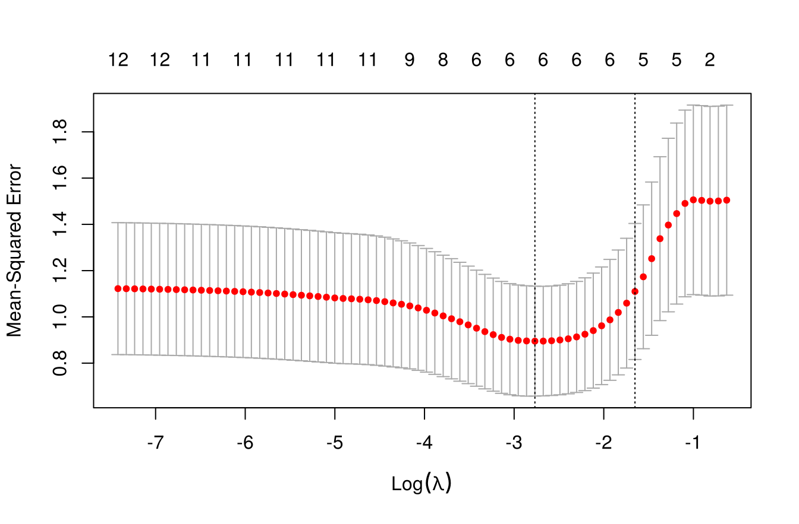
Figure 11.9: Ten-fold cross-validated error against the penalty for the lasso. Vertical bars are one standard error across folds. The left dotted line marks lambda.min, the right one lambda.1se.
The curve has the familiar shape: a high error where the penalty has shrunk everything away, a minimum, and a rise as the penalty weakens towards the overfitted least squares solution. The top axis counts non-zero coefficients, so the plot reports error and model size at the same time. ISLR’s equivalent is Figure 6.13.
Two values are returned. lambda.min minimises the cross-validated error. lambda.1se is the largest \(\lambda\) whose error lies within one standard error of that minimum. This is the one-standard-error rule of Day 7, applied here for the same reason: a difference smaller than the uncertainty of the estimates is not evidence, and when the data cannot distinguish two models, we prefer the simpler one.
KEY — lambda.1se usually gives a clearly smaller model at almost no cost in cross-validated error. For an interpretable model it is usually the better default; for pure prediction, lambda.min.
The coefficients are printed as a sparse matrix, with a dot wherever a coefficient is exactly zero. This output can be compared with the process that generated the data: only pel, twitch, passages and flow truly affect biofilm thickness.
selected <-which(as.vector(coef(cv_lasso, s ="lambda.1se"))[-1] !=0)list(truly_nonzero =names(beta_units),selected = predictors[selected])
Exact recovery should not be expected, and its absence is not a failure of the method. A predictor that is correlated with a true predictor carries part of the same information, so the lasso may keep it as well, or keep it instead of the true one. What we can reasonably ask is whether each selected predictor is a true predictor or belongs to the same correlated block as one.
⚠ With correlated predictors, treat lasso selection as identifying groups of related predictors rather than single ones. Reporting “swarming matters, twitching does not” claims more than the data can support when the two are correlated.
Penalised coefficients are not estimates of the true effects
The selected coefficients should not be read as estimates of the true effect sizes. The penalty pulls every coefficient towards zero, so a penalised coefficient is usually smaller in absolute value than the true coefficient — and the stronger the penalty, the stronger this shrinkage. In addition, when a signal is shared by correlated predictors, it may be divided over several of them. We can check both effects here, because the truth is known.
cv_ridge <-cv.glmnet(X, y, alpha =0, foldid = foldid)cv_las_f <-cv.glmnet(X, y, alpha =1, foldid = foldid)round(data.frame(true = beta_true,ols =unname(coef(ols)[-1]),ridge_1se =as.vector(coef(cv_ridge, s ="lambda.1se"))[-1],lasso_min =as.vector(coef(cv_las_f, s ="lambda.min"))[-1],lasso_1se =as.vector(coef(cv_las_f, s ="lambda.1se"))[-1],row.names = predictors), 2)
OLS gives every predictor a coefficient. Two true effects (passages, flow) are overestimated, and several predictors without effect (psl, cdg, inoculum) get sizeable coefficients.
Lasso sets most predictors without effect exactly to zero. The true effects keep the right sign but are smaller than the truth, and smaller at lambda.1se than at lambda.min, because the penalty is larger there. swarm is kept with a small coefficient: it is correlated with twitch and takes over a little of its effect.
Ridge at lambda.1se keeps all twelve predictors but shrinks them all strongly, the true effects included, to about 0.1 µm.
In every penalised column, the size of a coefficient reflects the penalty as much as the true effect.
KEY — A penalised coefficient answers the question “what coefficient gives the best predictions under this penalty?”, not “what is the true effect of this predictor?”. Its size depends on \(\lambda\) and on which correlated predictors happened to be kept.
Inference after selection
sel_df <-data.frame(y = y, X[, selected, drop =FALSE])summary(lm(y ~ ., data = sel_df))$coefficients
It is tempting to refit an ordinary linear model on the selected predictors and report the resulting table. This should be avoided. The predictors in that table were chosen because they appeared strongly associated with the response in this sample. The \(p\)-values are computed as if the predictors had been chosen in advance, so they are too small, and the confidence intervals too narrow.
⚠ This is the most consequential error in applied use of the lasso. The selection step is part of the analysis and must be accounted for. Valid post-selection inference exists — the selectiveInference package implements it — but it is not obtained by refitting with lm and reading off the stars.
↪ This is the double dipping of Day 2 (Exercise 2.2) in another guise: the data chose the variables, and the same data are then asked to test them.
An honest summary of a lasso analysis is a prediction error estimated by cross-validation, together with the selected set of predictors, described as a set. If the aim is a statement about the effect of one particular predictor, a regularised model is the wrong tool; a study designed with that predictor specified in advance is the right one.
Practical matters
Building the design matrix
glmnet takes a numeric matrix, not a formula, so factors must be converted to dummy variables first.
Xmat <-model.matrix(~ ., data = predictors)[, -1]
The [, -1] removes the intercept column, which glmnet adds itself and must not penalise. A factor with \(k\) levels becomes \(k-1\) dummy columns, each penalised separately. The penalty may therefore keep some levels of a factor and drop others, a result that is often awkward to interpret. The grpreg package implements a group lasso that treats all dummy columns of a factor as one unit.
Interactions are not discovered
Ridge and lasso are linear models. They do not search for interactions, and unlike a tree they will not find one by accident. If an interaction is expected, it must be written into the design matrix.
Xmat_int <-model.matrix(~ .^2, data = predictors)[, -1]
This is the sharpest contrast with the tree-based methods of Day 10. A random forest finds interactions automatically but does not report what they are; a penalised regression requires them to be specified, and then reports their coefficients.
Other response distributions
The family argument carries the penalised criterion over to generalised linear models, with the deviance in place of the residual sum of squares: family = "binomial" for logistic regression, "multinomial" for more than two categories, "poisson" for counts, and "cox" for survival times.
⚠glmnet has no dispersion parameter. With family = "poisson" it fits the Poisson mean structure but does not model overdispersion, so predictions are usable while the deviance-based error is not comparable to that of a negative binomial model.
Regression on a few derived variables
Penalisation is not the only answer to having too many correlated predictors. The alternative is to replace the predictors by a small number of new variables, each a weighted combination of all the original ones, and to regress the response on those. The construction of the new variables, principal component analysis (PCA), was the subject of Day 3.
Principal components regression
In the isolate data, nine of the twelve predictors are driven by three latent variables. PCA finds new variables, called principal components, that capture as much as possible of the variation among the predictors: the first component is the weighted combination of predictors with the largest variance, the second the combination with the next-largest variance that is uncorrelated with the first, and so on. When a few latent variables drive many measured variables, the first few components capture most of the variation.
DEF — Principal components regression (PCR) computes the first \(M\) principal components of the predictors and regresses the response on those \(M\) components by ordinary least squares.
library(pls)iso_df <-data.frame(thickness = y, X)set.seed(31)pcr_fit <-pcr(thickness ~ ., data = iso_df, scale =TRUE, validation ="CV")validationplot(pcr_fit, val.type ="MSEP",xlab ="number of components", main ="")
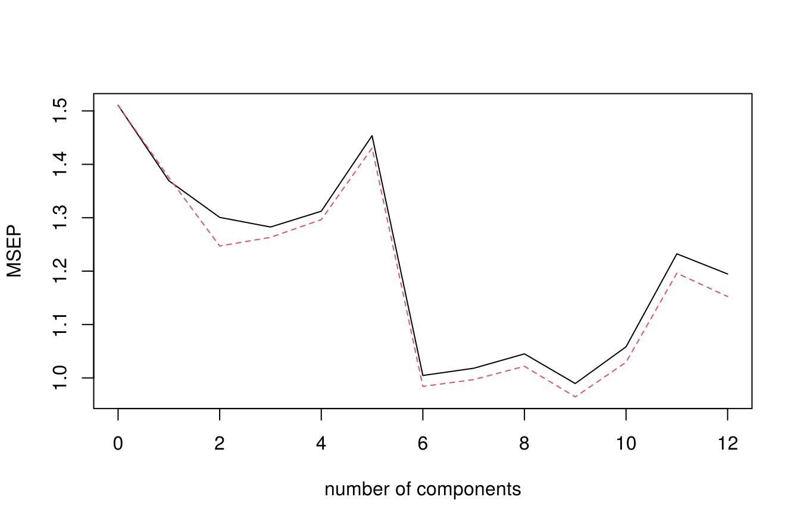
Cross-validated error of principal components regression against the number of components.
The curve shows the cross-validated error for 0 to 12 components. With all 12 components, PCR is identical to least squares; with fewer, it uses only the directions in which the predictors vary most. The curve is not smooth: the error hardly falls for the first five components and drops only at the sixth.
selectNcomp with method = "onesigma" applies the one-standard-error rule once more: it returns the smallest number of components whose error lies within one standard error of the minimum, here 1. The cross-validated error of that model (1.37) is much worse than that of the lasso (0.9). PCR does badly on these data, and the next section explains why.
⚠ PCR is not a variable-selection method. Every component is a combination of all twelve predictors, so no predictor is ever dropped; the model is small in components but uses every original variable.
Why unsupervised directions can fail
PCR chooses its components by looking only at X, never at the response. The directions that explain most of the variation among the predictors need not be the ones that predict the response: a high-variance direction may be irrelevant, and a low-variance direction may carry all the signal. PCR cannot detect this.
That is what happens here. The first components describe the three correlated blocks (quorum sensing, c-di-GMP, motility), because that is where most of the variation among the predictors lies. But two of the four true effects, passages and flow, are hardly correlated with anything else, so they only appear in later components with little variance. PCR needs many components before it reaches them. Variance is not the same as relevance.
Ridge regression can be seen as a smooth version of PCR. Instead of keeping the first \(M\) components completely and discarding the rest, ridge shrinks every component by the factor \(d_j^2/(d_j^2 + \lambda)\) — strongly for low-variance directions and weakly for high-variance ones. This is the same expression that appeared in the effective degrees of freedom, and it explains why ridge and PCR usually give similar results. Figure 6.19 compares them directly.
Partial least squares
DEF — Partial least squares (PLS) constructs new variables that have high variance and are correlated with the response, so that the response guides the choice of directions.
set.seed(32)pls_fit <-plsr(thickness ~ ., data = iso_df, scale =TRUE, validation ="CV")validationplot(pls_fit, val.type ="MSEP",xlab ="number of components", main ="")
PLS typically needs fewer components than PCR, because each direction is chosen for its relation with the response and not only for its variance. Here its error is lowest with three components (1), clearly better than PCR with the same number of components, although still not as good as the lasso. Using the response to choose the directions reduces bias but adds variance, since the response is now used twice.
⚠ Because PLS uses the response to construct its components, the construction must be repeated inside every cross-validation fold. plsr with validation = "CV" does this; computing the components once on the full data and then cross-validating only the regression gives an optimistic error.
PLS is standard practice in chemometrics and spectroscopy, where the number of correlated predictors (for example, reflectance at hundreds of wavelengths) is often far larger than the number of samples.
A common view
Six methods have now been applied to the same problem, and their differences come down to a few choices.
Method
Penalty or restriction
Sets coefficients to zero
Handles correlated predictors
Tuning
Least squares
none
no
badly
none
Ridge
\(\lambda\sum\beta_j^2\)
no
well
\(\lambda\)
Lasso
\(\lambda\sum\lvert\beta_j\rvert\)
yes
badly
\(\lambda\)
Elastic net
mixture
yes
well
\(\lambda, \alpha\)
PCR
first \(M\) components
no
well
\(M\)
PLS
first \(M\) supervised components
no
well
\(M\)
One further reading of the same penalties is worth knowing.
The Bayesian reading. Ridge regression gives the most probable coefficients (the posterior mode) when each coefficient has a normal prior distribution with mean 0. The lasso gives the posterior mode when each coefficient has a Laplace (double-exponential) prior, which has a sharp peak at zero — the probabilistic counterpart of the corner of the diamond. In both cases \(\lambda\) expresses how large the coefficients were expected to be before the data were seen.
KEY — A penalty acts as a prior, and cross-validation is a way of choosing that prior from the data. This is why the same device can be described either as regularisation or as shrinkage towards a population mean.
Reading in ISLR
Topic
ISLR
Figure
Link
Why subset selection is hard
§6.1.1
6.1
p. 228
Ridge: the criterion
§6.2.1
—
p. 237
Ridge coefficient paths
§6.2.1
6.4
p. 238
Ridge bias–variance
§6.2.1
6.5
p. 240
Lasso: the criterion and paths
§6.2.2
6.6
p. 242
The constraint geometry
§6.2.2
6.7
p. 244
Sparse versus dense truth
§6.2.2
6.8, 6.9
p. 246
Closed forms, orthonormal case
§6.2.2
6.10
p. 248
Choosing \(\lambda\) by CV
§6.2.3
6.12, 6.13
p. 250
Principal components regression
§6.3.1
6.18–6.20
p. 256
Partial least squares
§6.3.2
6.21
p. 260
What goes wrong when \(p > n\)
§6.4.2
6.23
p. 264
Interpreting high-dimensional fits
§6.4.4
6.24
p. 266
Lab: ridge, lasso, PCR, PLS
§6.5.2–3
—
p. 274
Three differences from the book are worth keeping in mind. ISLR covers subset selection (forward and backward selection) at length in §6.1; this course treats it only as the older alternative that regularisation replaced, because it shares the instability of the lasso without its computational advantages. ISLR’s lab uses a single training/test split, whereas this chapter uses cv.glmnet throughout. And the book’s \(\lambda\) is the textbook one, which differs in scale from the glmnet\(\lambda\).
↪ For the underlying theory, Hastie, Tibshirani & Friedman, The Elements of Statistical Learning, Chapter 3, and Hastie, Tibshirani & Wainwright, Statistical Learning with Sparsity (2015).
Where this leads
Every method covered since the resampling chapter chooses a position on the same scale. At one end is a model flexible enough to reproduce the training data exactly and useless on anything else; at the other, a model so constrained that it ignores the data. KNN chooses its position through \(k\), the SVM through its cost, and penalised regression through \(\lambda\). In every case the position is chosen by cross-validation, because counting parameters, as on Day 1, no longer measures what it needs to measure.
KEY — Day 1 asked what the data can resolve, and answered by counting parameters. The answer now is to measure the same thing empirically, by withholding data and checking the predictions.
None of these methods provides straightforward inference. They produce no coefficient with a trustworthy standard error, no valid \(p\)-value and no interpretable effect size. They are tools for predicting an outcome. Knowing which question is being asked is the basis for choosing between them.
The next two days make the same trade with a very different kind of model: the tree.